Uncertainties and Limitations for Use of Flood-Inundation Maps
Although the flood-inundation
maps represent the boundaries of inundated areas with a distinct line, some uncertainty is associated with these
maps. The flood boundaries shown were estimated based on water stages (water-surface elevations) and streamflows
at selected USGS streamgages. Water-surface elevations along the stream reaches were estimated by steady-state
hydraulic modeling, assuming unobstructed flow, and using streamflows and hydrologic conditions anticipated at
the USGS streamgage(s). Unique meteorological factors (timing and distribution of precipitation) may cause actual
streamflows along the modeled reach to vary from those assumed during a flood, which may lead to deviations in the
water-surface elevations and inundation boundaries shown. Additional areas may be flooded due to unanticipated
conditions such as: changes in the streambed elevation or roughness, backwater into major tributaries along a main
stem river, or backwater from localized debris or ice jams. The accuracy of the floodwater extent portrayed on
these maps will vary with the accuracy of the digital elevation model used to simulate the land surface.
Additional uncertainties and limitations pertinent to this study are described in the document accompanying this
set of flood inundation map plates.
If this series of flood-inundation maps will be used in conjunction
with National Weather Service (NWS) river forecasts, the user should be aware of additional uncertainties that may
be inherent or factored into NWS forecast procedures. The NWS uses forecast models to estimate the quantity and
timing of water flowing through selected stream reaches in the United States. These forecast models (1) estimate
the amount of runoff generated by precipitation and snowmelt, (2) simulate the movement of floodwater as it
proceeds downstream, and (3) predict the flow and stage (water-surface elevation) for the stream at a given
location (AHPS forecast point) throughout the forecast period (every 6 hours and 3 to 5 days out in many locations).
For more information on AHPS forecasts, please see:
https://water.weather.gov/ahps/pcpn_and_river_forecasting.pdf
More information about the Flood Inundation Mapping Program can be found here.
Version 1.1.0
Welcome to the USGS FIM Mapper.
The FIM Mapper allows users to explore the full set of inundation maps that shows where flooding would occur given a selected stream condition. Users can also access historical flood information and potential loss estimates based on the severity of the flood. The FIM Mapper helps communities visualize potential flooding scenarios, identify areas and resources that may be at risk, and enhance their local response effort during a flooding event.
Disclaimer for Flood-Inundation Maps
Inundated areas shown should not be used for navigation,
regulatory, permitting, or other legal purposes. Although USGS intends to make this server available 24 hours a day,
7 days a week, timely delivery of data and products from this server through the Internet is not guaranteed.
The USGS provides these maps “as-is” for a quick reference, emergency planning tool but assumes no legal liability
or responsibility resulting from the use of this information.
SearchingThe search option allows the user to search for a location such as a city, state, zip code, or general place name.
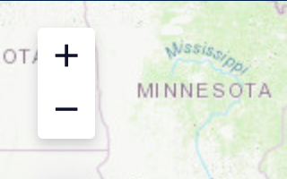
Navigating the mapThe scroll wheel on the mouse can be used to zoom, and in the upper left area of the tool are "+" and "-" icons to zoom in and out, respectively.
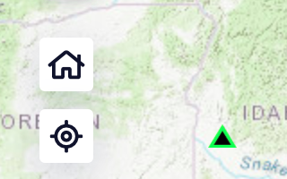
Home LocationThe crosshair button will zoom the map to your location, and the home button will center the US on the map.
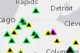
Opening a siteClicking on an arrow or circle at a site will bring up a window with details about the site, graphs of the original data and model predictions (for some constituents), and a table of the other trend results at the same site.
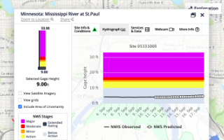
Moving site windowReposition the site info pop-up window with the mouse see the rest of the underlying map if necessary.
Explanation
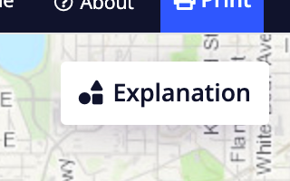
Explanation displayThe Explanation box can be collapsed to display more of the mapped area.
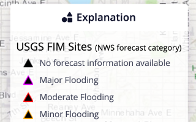
Using the ExplanationThe expanded Explanation box explains the arrows and circles that appear for each site, displaying the results from the statistical analysis of trends.
Navigation & Map Selection
Find Location/SearchThis button allows the user to search for a location such as a city, state, zip code, or general place name.
ZoomingThe scroll wheel on the mouse can be used to control zooming. In the upper left area of the map interface are "+" and "-" icons; these can also be used to zoom in and out, respectively.
Home ButtonThe "Default extent" (Home icon) button will center the US on the map interface. The "Find my location" (Crosshair icon) button will zoom the map interface to your current location.
Mobile SidebarOn mobile devices, additional basemap and map layer selection option can be accessed by clicking on the 3-line icon which is shown in the most upper left corner of the map interface.
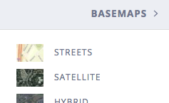
BasemapsThe "Basemaps" sidebar allows a user to choose and show various geographic information or landscape imagery as a background layer beneath the flood map layers.
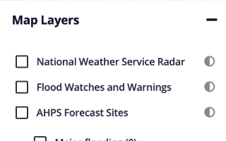
Map LayersThe "Map Layers" sidebar allows a user to choose and show additional map layers that are available from National Weather Service.
Site Selection & Flood Tools
Selecting a SiteA user can select a site by clicking on any of the triangle symbols on the map interface. When a site is selected, a separate window will pop-up; this window will have several tabs with additional information about the site.
Adjusting Popup PositionThe pop-up window can be repositioned with mouse cursor and/or can be minimized to see the rest of the flood map layers if necessary.
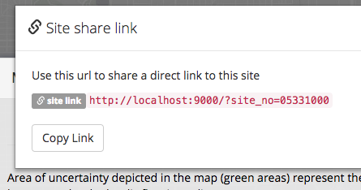
Sharing Site URLAt the end of the site name on the initial popup window, there is a link called "Share". When clicked, another popup window displays a site link URL which can be shared and used to browse directly to that particular site. This URL can be copied either by manually selecting the text or by clicking on the "Copy Link" button.
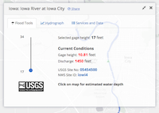
Flood ToolsIn most cases, the first tab that a user will see, is called "Flood Tools". Moving the slider to a different stream gage height/stage shows how the surrounding community would be affected at different water levels.
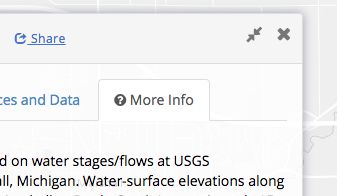
More Info TabIn some cases, a user may see a tab called "More Info" first instead of "Flood Tools" tab. When a particular site has a special message/information that a user should be aware of, the "More Info" tab displays that message/information before a user can move on to using the other tools
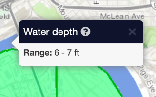
Water DepthClick in the inundated area to display estimated water depths.
HydrographChange to the "Hydrograph" tab to view the observed and predicted (if available) gage height/stage data.
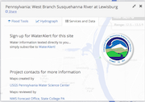
Services & DataThe "Service and Data" tab includes access to study documentation and GIS data layers. Users can also sign up to receive text or email from the USGS when waters are rising in rivers and streams through WaterAlert. Users can use the flood inundation maps to determine what WaterAlert threshold to sign up for based on how flood levels will impact their area.
High Zoom Level Flood extent disclaimer
You're viewing the basemap at a zoom level higher than the source material may accurately represent. Learn more about Flood Inundation Mapping Science.